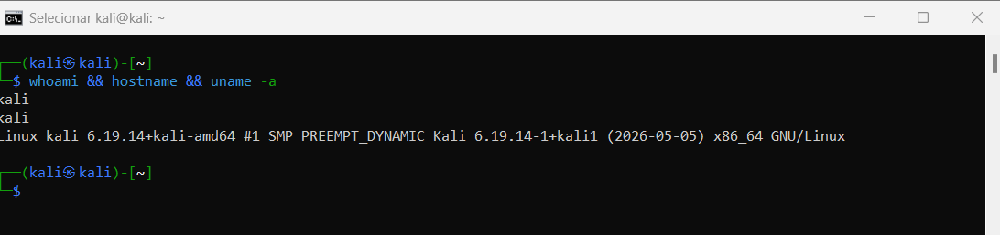
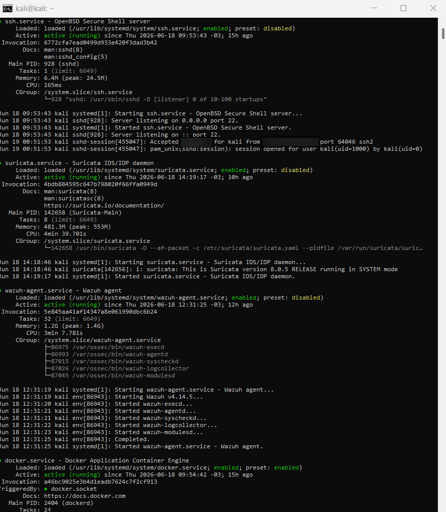
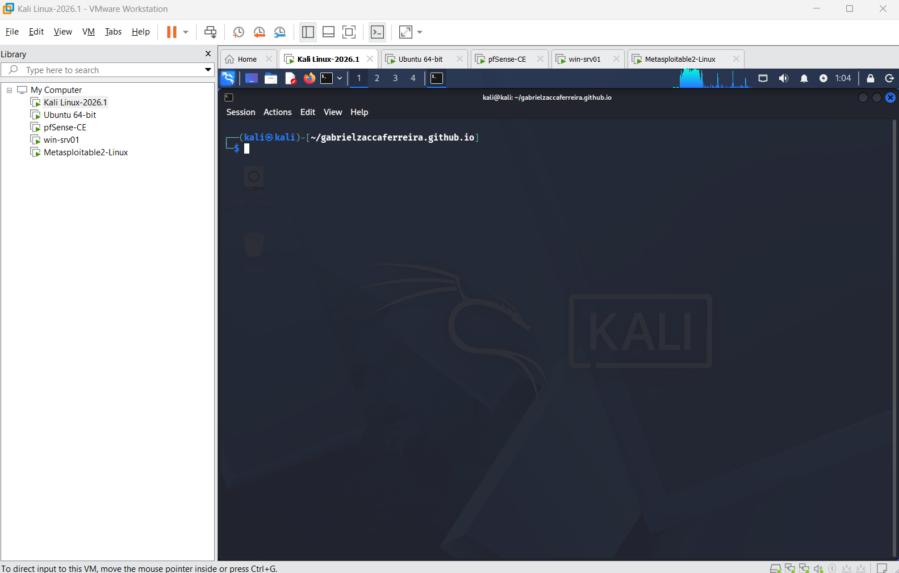
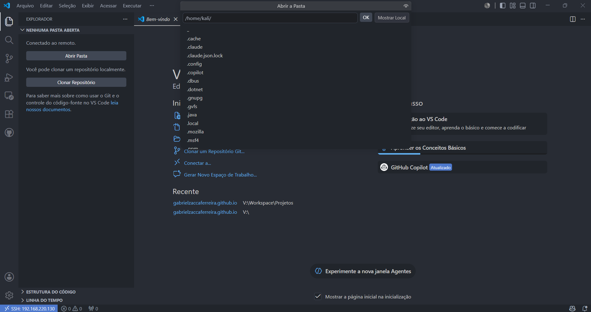

Host físico
Dell OptiPlex com Windows 11, Intel Core i7-10700T, 32 GB de RAM e SSD NVMe de 1 TB — base para toda a virtualização do laboratório.
Dell OptiPlex
i7-10700T
32 GB RAM
SSD NVMe 1 TB
Laboratório Base • Linux • VMware • SSH • XRDP
Configuração completa de um ambiente virtualizado com Kali Linux no VMware Workstation, incluindo modo Bridge, acesso SSH remoto, VS Code Remote e área de trabalho gráfica via XRDP — a fundação sobre a qual todos os laboratórios de Redes e Cibersegurança foram construídos.
Topologia do laboratório
Este laboratório foi executado em ambiente local, controlado e autorizado. Endereços IP, hostnames, usuários, comandos e evidências exibidos pertencem ao ambiente de estudo ou foram anonimizados. Nenhuma credencial real, token, chave privada ou dado sensível deve ser publicado.
Índice
Sobre o laboratório
O Kali Linux foi a primeira plataforma que configurei do zero como ambiente de estudos. A decisão de usá-lo dentro do VMware Workstation em modo Bridge foi estratégica: permitiu que a VM tivesse um IP real na rede local, possibilitando acesso SSH remoto, integração com outros dispositivos e construção de laboratórios que simulam ambientes reais.
A partir desse ambiente base, desenvolvi todos os outros laboratórios do portfólio — Wazuh SIEM/XDR, Suricata IDS/IPS e CrowdSec — usando o Kali como endpoint monitorado e plataforma de estudo contínuo.
Especificações
Dell OptiPlex com Windows 11, Intel Core i7-10700T, 32 GB de RAM e SSD NVMe de 1 TB — base para toda a virtualização do laboratório.
Hypervisor utilizado para criação e gerenciamento da VM Kali Linux, configurado em modo Bridge para integração com a rede local real.
Sistema operacional principal do laboratório, rodando como VM com IP fixo na rede local, XFCE como ambiente gráfico e XRDP para acesso remoto.
Extensão SSH do VS Code configurada para editar arquivos e gerenciar projetos diretamente no Kali Linux a partir do Windows, sem necessidade de interface gráfica.
Processo de implementação
Cada etapa foi concluída em ordem, validada antes de avançar para a próxima. Esse fluxo sequencial garantiu estabilidade e permitiu identificar problemas com precisão.
Instalação do hypervisor no host Windows 11 e configuração inicial da plataforma de virtualização para criação dos laboratórios.
Criação da máquina virtual com Kali Linux, alocação de recursos (RAM, CPU, disco) e instalação do sistema operacional. Snapshot inicial criado após instalação limpa.
Alteração da placa de rede da VM de NAT para Bridge, permitindo que o Kali Linux obtenha um IP real da rede local e seja acessível pelos outros dispositivos do laboratório.
Instalação e ativação do servidor SSH no Kali Linux, validação da conexão remota a partir do host Windows e configuração de chaves para acesso seguro sem senha.
Configuração da extensão Remote SSH no VS Code para editar arquivos, gerenciar projetos e executar comandos no Kali Linux diretamente do editor no Windows.
Instalação do servidor XRDP e configuração do ambiente gráfico XFCE para acesso via área de trabalho remota. Resolução de conflitos de sessão com múltiplas conexões abertas.
Criação do snapshot Kali-Remoto-Completo-v1 após validação de todos os serviços: Bridge, SSH, VS Code Remote e XRDP funcionando corretamente.
Etapa 01
O VMware Workstation é o hypervisor tipo 2 escolhido para o laboratório — roda sobre o Windows 11 do host e permite criar múltiplas VMs isoladas compartilhando o hardware físico.
O instalador foi baixado diretamente do site oficial da Broadcom (atual proprietária do VMware). A versão Workstation Pro passou a ser gratuita para uso pessoal a partir de 2024. O processo de instalação é padrão — next, next, finish — sem customizações necessárias para o laboratório.
Após a instalação, o Virtual Network Editor foi verificado para confirmar as redes virtuais disponíveis. As duas redes relevantes para o laboratório são a VMnet1 (Host-only) e a VMnet8 (NAT). A rede Bridge não aparece listada pois usa diretamente a placa física do host.
Com o VMware instalado e rodando, o próximo passo foi criar a primeira VM. A interface do Workstation lista todas as VMs criadas na biblioteca lateral — Kali Linux, Ubuntu Server e pfSense foram adicionados ao longo do projeto.
Etapa 02
A VM foi criada usando o assistente do VMware Workstation com a ISO oficial do Kali Linux 2026.2 (amd64). As decisões de alocação de recursos foram baseadas na capacidade do host e na quantidade de VMs que rodariam simultaneamente.
RAM: 4 GB — suficiente para o Kali com XFCE e as ferramentas de segurança.
CPUs: 2 vCPUs — balanceado para não sobrecarregar o host i7-10700T.
Disco: 60 GB — espaço para o sistema, ferramentas e logs dos laboratórios.
Interface gráfica: XFCE — leve e eficiente, ideal para ambiente virtualizado.
A instalação seguiu o processo padrão do Kali Linux com instalação gráfica. Usuário kali criado com senha definida. Após a instalação, o sistema foi atualizado com sudo apt update && sudo apt upgrade -y antes de qualquer outra configuração.
Antes de qualquer configuração adicional, um snapshot inicial foi criado — "Kali-Limpo" — como ponto de restauração caso algo saísse errado nas etapas seguintes. Boa prática que salvou tempo em alguns momentos do laboratório.
Etapa 03
Por padrão o VMware cria VMs em modo NAT — a VM acessa a internet através do IP do host, mas outros dispositivos da rede não conseguem alcançá-la diretamente. Para o laboratório, isso era um problema: o Ubuntu Server precisava se comunicar com o Kali como se fossem máquinas reais na mesma rede.
NAT: a VM fica "atrás" do host. IP atribuído pelo VMware (ex: 192.168.x.x vmware). Outros dispositivos da rede física não enxergam a VM.
Bridge: a VM se conecta diretamente à rede física através da placa de rede do host. Recebe IP do roteador/DHCP da rede real. Qualquer dispositivo na LAN consegue se comunicar com ela como se fosse uma máquina física.
Nas configurações da VM (VM → Settings → Network Adapter), o modo foi alterado de NAT para Bridged. A opção "Replicate physical network connection state" foi marcada para que a VM responda às mudanças de conexão do host.
Após reiniciar a VM, o Kali recebeu automaticamente um IP da rede local via DHCP do roteador — na mesma subnet do host Windows e do Ubuntu Server.
Validado com ip addr para confirmar o IP atribuído e ping bidirecional entre o Kali e o host Windows. A partir desse momento, os dispositivos do laboratório podiam se comunicar diretamente.
Etapa 04
Com o Bridge configurado e o Kali acessível na rede, o próximo passo foi habilitar o acesso SSH — permitindo gerenciar a VM via terminal sem precisar abrir a janela do VMware.
O OpenSSH já vem instalado no Kali Linux. Foi necessário apenas iniciar o serviço e habilitá-lo para iniciar automaticamente com o sistema:
Para eliminar a necessidade de digitar senha a cada conexão, foi configurada autenticação por chave pública:
1. Geração do par de chaves no Windows: ssh-keygen -t rsa -b 4096
2. Cópia da chave pública para o Kali: ssh-copy-id kali@IP_DO_KALI
3. Teste da conexão sem senha: ssh kali@IP_DO_KALI
A partir desse momento, qualquer terminal no Windows (PowerShell, Windows Terminal, Git Bash) passou a ter acesso direto ao Kali Linux com um simples ssh kali@IP — sem senha, instantâneo.
Etapa 05
Com SSH funcionando, foi possível conectar o VS Code diretamente ao Kali Linux — transformando o editor do Windows em uma interface completa para o sistema remoto. Isso foi especialmente útil para editar arquivos de configuração, escrever scripts e organizar os repositórios dos laboratórios.
No VS Code, a extensão Remote - SSH (publicada pela Microsoft) foi instalada pelo marketplace. Ela adiciona um ícone de conexão remota na barra lateral e permite conectar a qualquer host SSH configurado.
O host SSH foi adicionado ao arquivo de configuração do SSH do Windows (~/.ssh/config):
Com a conexão estabelecida, o VS Code abre o sistema de arquivos do Kali no Explorer lateral. É possível editar qualquer arquivo — ossec.conf, suricata.yaml, scripts Bash — com syntax highlight, autocomplete e terminal integrado rodando diretamente no Kali.
Etapa 06
O SSH cobre bem o acesso via terminal. Mas algumas situações exigem interface gráfica — abrir o Wireshark, por exemplo, ou navegar em arquivos visualmente. O XRDP resolve isso: permite acessar o desktop completo do Kali via RDP, o mesmo protocolo usado no Windows.
Instalação do XRDP e do servidor de sessão XFCE:
O XRDP precisa saber qual ambiente gráfico iniciar. Foi criado o arquivo ~/.xsession com o conteúdo xfce4-session para que o XFCE seja carregado a cada conexão RDP.
O problema mais comum com XRDP: múltiplas sessões abertas do mesmo usuário causam um loop onde a tela aceita as credenciais mas retorna imediatamente para o login. O diagnóstico foi feito com loginctl — que revelou sessões presas — e a solução com sudo pkill -u kali seguido de reinício do LightDM e XRDP. Esse processo virou o script reiniciar-rdp.sh.
Com o XRDP funcionando, o acesso é feito pelo mstsc (Conexão de Área de Trabalho Remota) nativo do Windows — digitando o IP do Kali e as credenciais. O desktop XFCE completo abre em uma janela no Windows.
Etapa 07
Com todas as configurações validadas — Bridge, SSH, VS Code Remote e XRDP funcionando — foi criado o snapshot definitivo do ambiente base. Esse snapshot é o ponto de restauração confiável para todo o laboratório.
Um snapshot captura o estado completo da VM em um momento específico — disco, memória, configurações. Se algo quebrar nos laboratórios seguintes (Wazuh, Suricata, CrowdSec), é possível restaurar o ambiente base em segundos sem reinstalar nada.
Antes de criar o snapshot, todos os serviços foram validados:
✓ ip addr — IP Bridge ativo na rede local
✓ ssh kali@IP do Windows — acesso sem senha
✓ VS Code Remote — conexão e edição de arquivo de teste
✓ mstsc → IP do Kali — desktop XFCE abrindo corretamente
✓ systemctl status ssh xrdp — ambos active (running)
No VMware Workstation: VM → Snapshot → Take Snapshot. Nome definido como Kali-Remoto-Completo-v1 com descrição do estado. A partir desse ponto, todos os outros laboratórios foram construídos sobre essa base — com a segurança de poder voltar a qualquer momento.
Acesso remoto
O ambiente foi configurado com três modalidades de acesso remoto, cada uma com uma finalidade diferente. Isso eliminou a necessidade de usar o Kali Linux diretamente no console da VM, tornando o fluxo de trabalho mais profissional e produtivo.
Acesso via terminal ao Kali Linux a partir do Windows. Usado para comandos, administração de serviços, troubleshooting e execução de scripts sem interface gráfica.
Editor de código conectado diretamente ao Kali via SSH. Permite editar arquivos de configuração, escrever scripts e gerenciar projetos com toda a interface do VS Code.
Área de trabalho gráfica completa via RDP. Acesso ao ambiente XFCE do Kali Linux pelo Windows usando o mstsc (Conexão de Área de Trabalho Remota).
Troubleshooting documentado
Um problema recorrente com o XRDP é que múltiplas sessões abertas do mesmo usuário
causam um loop de login — a tela aceita as credenciais mas retorna imediatamente
para o login. O diagnóstico foi feito com loginctl e a solução com dois comandos:
O comando loginctl revelou 4 sessões simultâneas do usuário kali — a causa do conflito.
Cada conexão XRDP sem encerramento correto deixa uma sessão presa.
sudo pkill -u kali encerra todas as sessões do usuário.
Em seguida, reiniciar LightDM e XRDP restaura o acesso gráfico corretamente.
Script reiniciar-rdp.sh criado para automatizar o processo de recuperação,
executável via SSH quando o acesso gráfico falhar.
Scripts criados
Durante a configuração do ambiente, foi necessário criar scripts para automatizar tarefas repetitivas e garantir recuperação rápida em caso de falhas.
Script de emergência para recuperação do acesso XRDP. Encerra todas as sessões do usuário kali, reinicia o LightDM e o XRDP em sequência. Executado via SSH quando o acesso gráfico falha.
Repositório criado no Kali Linux para organização de todos os arquivos, configurações, scripts e evidências dos laboratórios. Versionado com Git e publicado no GitHub.
Competências desenvolvidas
A configuração deste ambiente exigiu conhecimentos que vão além de instalar um sistema operacional. Cada etapa envolveu diagnóstico, decisão técnica e validação — habilidades diretamente aplicáveis em ambientes reais de infraestrutura.
Gerenciamento de serviços com systemctl, controle de permissões, administração de usuários e sessões, análise de logs do sistema e operação diária via terminal.
Criação e configuração de VMs no VMware Workstation, gerenciamento de snapshots para backup de estados estáveis e configuração de modos de rede (Bridge vs NAT).
Configuração de modo Bridge para integração com a LAN real, validação de conectividade com ping, verificação de portas abertas e diagnóstico de problemas de conectividade.
Instalação e configuração de servidor SSH, geração e uso de chaves RSA, configuração de acesso sem senha e gerenciamento de conexões remotas seguras.
Diagnóstico de conflitos de sessão com loginctl, identificação da causa raiz do loop de login no XRDP e aplicação de solução definitiva com pkill e reinício de serviços.
Criação de scripts de automação para recuperação de serviços, uso de chmod para permissões de execução e estruturação de rotinas de manutenção do ambiente.
Evolução do laboratório
O Kali Linux foi o ponto zero. Cada laboratório que veio depois foi construído sobre essa base, usando o Kali como endpoint, plataforma de testes ou ferramenta de investigação.
VMware + Bridge + SSH + VS Code Remote + XRDP. Snapshot criado. Laboratório pronto para uso.
Repositório wazuh-lab/ criado no Kali para organizar os projetos e evidências dos laboratórios.
Kali Linux utilizado como endpoint com agente Wazuh instalado, registrado e integrado ao servidor Ubuntu Server.
Suricata instalado no Kali, gerando eventos de segurança integrados ao Wazuh via eve.json.
Próxima etapa: implementação de proteção colaborativa baseada em análise de logs no ambiente Kali.
Resultados
Este ambiente não é apenas uma VM rodando. É uma infraestrutura completa de estudos, acessível remotamente, versionada, documentada e em constante evolução.
Evidências
A documentação completa do laboratório está disponível no repositório GitHub, incluindo toda a configuração de SSH, XRDP, Bridge e acesso remoto.




Próximos passos
Implementar proteção colaborativa baseada em análise de logs, decisões de bloqueio e comportamento malicioso no ambiente Kali.
pfSense já integrado ao laboratório como firewall e gateway da LAN. Próxima evolução: aprofundar regras, logs e segmentações mais avançadas.
Docker já instalado e utilizado no laboratório, incluindo apoio aos testes com aplicações vulneráveis. Próxima evolução: organizar containers por cenários.
Integrar o ambiente local com fundamentos de cloud computing no Azure, conectando o laboratório físico com infraestrutura em nuvem.
Conclusão
Configurar esse ambiente do zero — VMware, Bridge, SSH, VS Code Remote e XRDP — foi o primeiro projeto técnico real documentado neste portfólio. Cada erro encontrado e cada solução aplicada fortaleceu a base para tudo que veio depois.